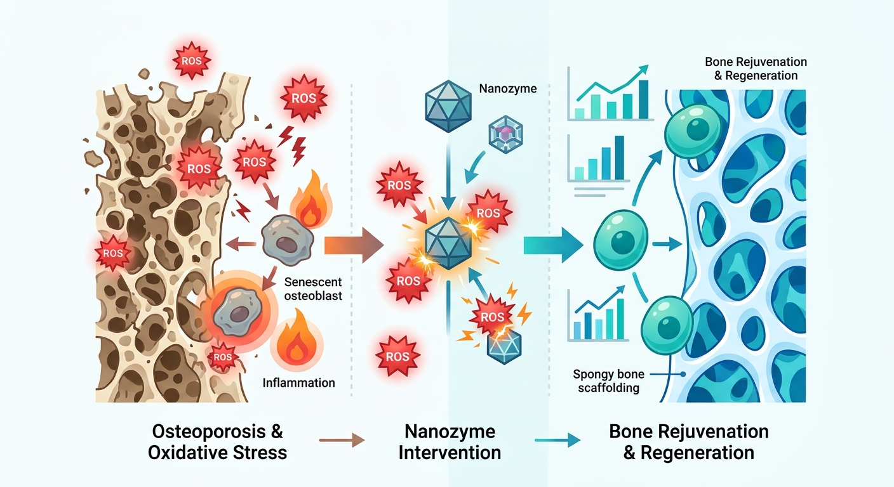

The Catalytic Bone Builders: How Dual-Action Nanozymes Could Reverse Age-Related Osteoporosis

As the human body ages, its internal architecture quietly crumbles. Trabecular bone—the spongy, lattice-like scaffolding that provides structural integrity to our skeleton—erodes under the weight of chronic low-grade inflammation, oxidative stress, and cellular exhaustion. At the heart of this degradation lies a cellular tipping point: specialized bone-building cells known as osteoblasts fall into senescence. Trapped in a state of metabolic bankruptcy, these senescent cells lose their ability to manufacture new bone, while cellular debris and reactive oxygen species (ROS) run rampant, uncoupling bone renewal from natural resorption.
To fix this structural decay, researchers are looking beyond traditional small molecules toward advanced bio-inspired engineering. A team of nanomedicine scientists has developed a novel bifunctional nanozyme capable of attacking the root metabolic causes of skeletal aging. Designed by anchoring platinum (Pt) nanoparticles onto cerium oxide (CeO2) nanorods, this hybrid nanomaterial acts as a miniature, self-sustaining metabolic factory. The cerium oxide component serves as a powerful antioxidant engine to sweep up cellular ROS, while the platinum nanoparticles act as synthetic catalysts that convert surplus NADH back into NAD+—the quintessential coenzyme required for mitochondrial cellular energy and survival.
In laboratory studies on senescent osteoblasts, the Pt/CeO2 nanozyme delivered a impressive dual payload: it neutralized destructive oxidative stress, restored damaged mitochondrial membranes, and lifted the senescent block, enabling the osteoblasts to resume normal bone formation. When administered systemically to naturally aged mice, the results were equally compelling. Rather than suffering progressive bone loss, the treated animals maintained their fragile trabecular microarchitecture and displayed significant increases in overall bone mineral density, effectively rebooting the skeletal regenerative machinery.
This catalytic approach represents a potential paradigm shift in longevity therapeutics. Rather than simply supplementing cells with metabolic precursors like NMN or NR, which can be inefficiently processed during advanced aging, the dual nanozyme directly resets the cellular redox ratio right where it is needed. By coupling ROS clearance with localized NAD+ regeneration, the system addresses two interconnected hallmarks of aging—mitochondrial decay and cellular senescence—simultaneously.
Yet, despite these promising preclinical findings, significant translational hurdles remain before this nanozyme therapy reaches human clinical trials. Synthetic metal-based nanomaterials like platinum and cerium oxide pose well-known biopersistence and potential toxicity challenges; long-term biodistribution, degradation pathways, and immune clearance profiles in larger mammals must be thoroughly characterized. Furthermore, naturally aged mouse models do not fully replicate the complex biomechanics, hormonal changes, and multi-organ pathology seen in human osteoporosis. Transforming a systemic heavy-metal nanorod into a targeted, safe human drug will require extensive safety profiling and precise targeting mechanisms.
Sources & Citations:
Primary Source: Bifunctional Pt/CeO2 Nanozyme-Mediated Metabolic Regulation Promotes NAD+ Regeneration and ROS Clearance to Ameliorate Age-Related Osteoporosis. (ACS applied materials & interfaces)
- Zhao et al., Bifunctional Pt/CeO2 Nanozyme-Mediated Metabolic Regulation Promotes NAD+ Regeneration and ROS Clearance to Ameliorate Age-Related Osteoporosis. ACS Applied Materials & Interfaces (2024). https://doi.org/10.1021/acsami.6c18762